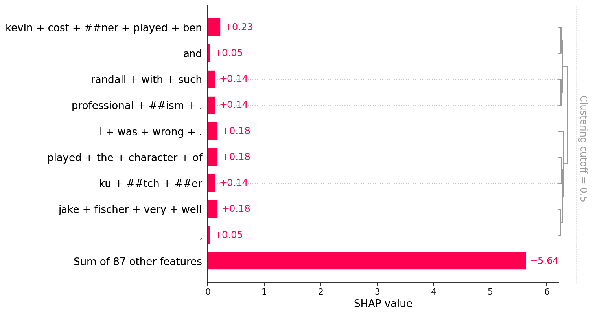
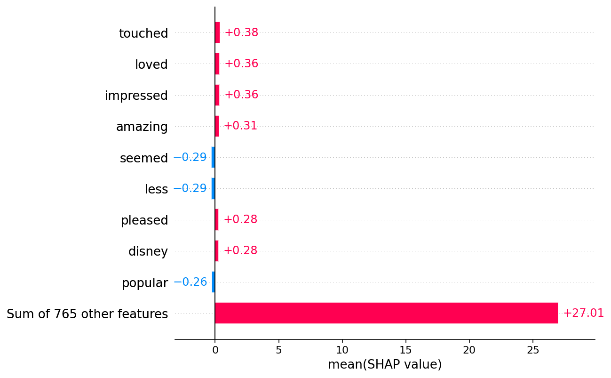
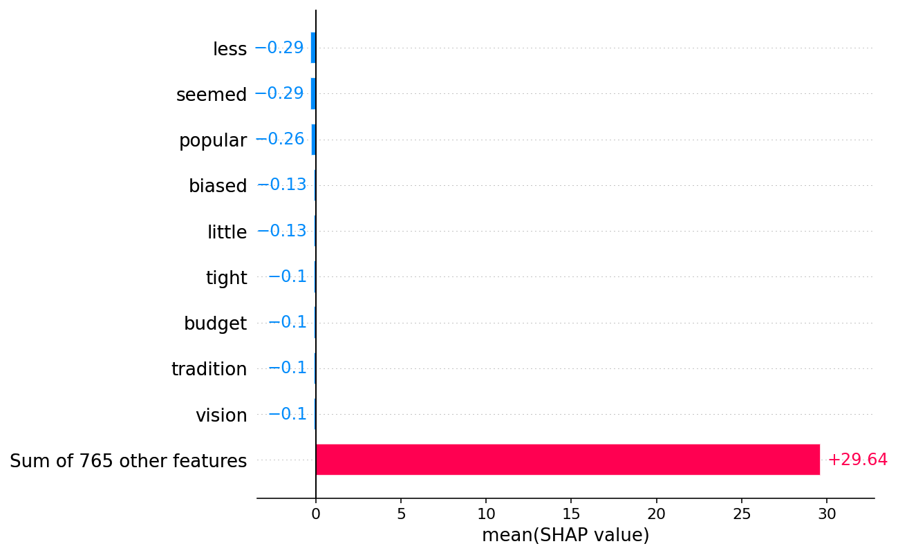

Positive vs. Negative Sentiment Classification
Here we demonstrate how to explain a sentiment classification model for movie reviews. positive vs. negative sentim
[47]:
import datasets
import numpy as np
import transformers
import shap
Load the IMDB movie review dataset
[2]:
dataset = datasets.load_dataset("imdb", split="test")
# shorten the strings to fit into the pipeline model
short_data = [v[:500] for v in dataset["text"][:20]]
Reusing dataset imdb (/home/slundberg/.cache/huggingface/datasets/imdb/plain_text/1.0.0/90099cb476936b753383ba2ae6ab2eae419b2e87f71cd5189cb9c8e5814d12a3)
Load and run a sentiment analysis pipeline
[3]:
classifier = transformers.pipeline("sentiment-analysis", return_all_scores=True)
classifier(short_data[:2])
[3]:
[[{'label': 'NEGATIVE', 'score': 0.0012035118415951729},
{'label': 'POSITIVE', 'score': 0.9987965226173401}],
[{'label': 'NEGATIVE', 'score': 0.002218781039118767},
{'label': 'POSITIVE', 'score': 0.9977812170982361}]]
Explain the sentiment analysis pipeline
[4]:
# define the explainer
explainer = shap.Explainer(classifier)
[5]:
# explain the predictions of the pipeline on the first two samples
shap_values = explainer(short_data[:2])
[6]:
shap.plots.text(shap_values[:, :, "POSITIVE"])
0th instance:
i went and saw this movie last night after being coaxed to by a few friends of mine . i ' ll admit that i was reluctant to see it because from what i knew of ashton kutcher he was only able to do comedy .
i was wrong . kutcher played the character of jake fischer very well , and kevin costner played ben randall with such professionalism .
the sign of a good movie is that it can toy with our emotions . this one did exactly that .
the entire theater ( which was sold out ) was overcome by laughter during the
1st instance:
actor turned director bill paxton follows up his promising debut , the gothic - horror " frailty " , with this family friendly sports drama about the 1913 u . s .
open where a young american caddy rises from his humble background to play against his bristish
idol in what was dubbed as " the greatest game ever played .
" i ' m no fan of golf , and these scrappy underdog sports flicks are a dime a dozen ( most recently done to grand effect with " miracle " and " cinderella man " ) ,
but some how this film was enthralli
Wrap the pipeline manually
SHAP requires tensor outputs from the classifier, and explanations works best in additive spaces so we transform the probabilities into logit values (information values instead of probabilites).
Create a TransformersPipeline wrapper
[7]:
pmodel = shap.models.TransformersPipeline(classifier, rescale_to_logits=False)
[8]:
pmodel(short_data[:2])
[8]:
array([[0.00120351, 0.99879652],
[0.00221878, 0.99778122]])
[9]:
pmodel = shap.models.TransformersPipeline(classifier, rescale_to_logits=True)
pmodel(short_data[:2])
[9]:
array([[-6.72130722, 6.72133589],
[-6.10857607, 6.10857523]])
[13]:
explainer2 = shap.Explainer(pmodel)
shap_values2 = explainer2(short_data[:2])
shap.plots.text(shap_values2[:, :, 1])
0th instance:
i went and saw this movie last night after being coaxed to by a few friends of mine . i ' ll admit that i was reluctant to see it because from what i knew of ashton kutcher he was only able to do comedy .
i was wrong . kutcher played the character of jake fischer very well , and kevin costner played ben randall with such professionalism .
the sign of a good movie is that it can toy with our emotions . this one did exactly that .
the entire theater ( which was sold out ) was overcome by laughter during the
1st instance:
actor turned director bill paxton follows up his promising debut , the gothic - horror " frailty " , with this family friendly sports drama about the 1913 u . s .
open where a young american caddy rises from his humble background to play against his bristish
idol in what was dubbed as " the greatest game ever played .
" i ' m no fan of golf , and these scrappy underdog sports flicks are a dime a dozen ( most recently done to grand effect with " miracle " and " cinderella man " ) ,
but some how this film was enthralli
Pass a tokenizer as the masker object
[15]:
explainer2 = shap.Explainer(pmodel, classifier.tokenizer)
shap_values2 = explainer2(short_data[:2])
shap.plots.text(shap_values2[:, :, 1])
0th instance:
i went and saw this movie last night after being coaxed to by a few friends of mine . i ' ll admit that i was reluctant to see it because from what i knew of ashton kutcher he was only able to do comedy .
i was wrong . kutcher played the character of jake fischer very well , and kevin costner played ben randall with such professionalism .
the sign of a good movie is that it can toy with our emotions . this one did exactly that .
the entire theater ( which was sold out ) was overcome by laughter during the
1st instance:
actor turned director bill paxton follows up his promising debut , the gothic - horror " frailty " , with this family friendly sports drama about the 1913 u . s .
open where a young american caddy rises from his humble background to play against his bristish
idol in what was dubbed as " the greatest game ever played .
" i ' m no fan of golf , and these scrappy underdog sports flicks are a dime a dozen ( most recently done to grand effect with " miracle " and " cinderella man " ) ,
but some how this film was enthralli
Build a Text masker explicitly
[35]:
masker = shap.maskers.Text(classifier.tokenizer)
explainer2 = shap.Explainer(pmodel, masker)
shap_values2 = explainer2(short_data[:2])
shap.plots.text(shap_values2[:, :, 1])
0th instance:
i went and saw this movie last night after being coaxed to by a few friends of mine . i ' ll admit that i was reluctant to see it because from what i knew of ashton kutcher he was only able to do comedy .
i was wrong . kutcher played the character of jake fischer very well , and kevin costner played ben randall with such professionalism .
the sign of a good movie is that it can toy with our emotions . this one did exactly that .
the entire theater ( which was sold out ) was overcome by laughter during the
1st instance:
actor turned director bill paxton follows up his promising debut , the gothic - horror " frailty " , with this family friendly sports drama about the 1913 u . s .
open where a young american caddy rises from his humble background to play against his bristish
idol in what was dubbed as " the greatest game ever played .
" i ' m no fan of golf , and these scrappy underdog sports flicks are a dime a dozen ( most recently done to grand effect with " miracle " and " cinderella man " ) ,
but some how this film was enthralli
Explore how the Text masker works
[42]:
masker.shape("I like this movie.")
[42]:
(1, 7)
[48]:
model_args = masker(np.array([True, True, True, True, True, True, True]), "I like this movie.")
model_args
[48]:
(array(['i like this movie .'], dtype='<U19'),)
[49]:
pmodel(*model_args)
[49]:
array([[-8.90780458, 8.90742142]])
[50]:
model_args = masker(np.array([True, True, False, False, True, True, True]), "I like this movie.")
model_args
[50]:
(array(['i [MASK] [MASK] movie .'], dtype='<U23'),)
[51]:
pmodel(*model_args)
[51]:
array([[-3.72092204, 3.72092316]])
[52]:
masker2 = shap.maskers.Text(classifier.tokenizer, mask_token="...", collapse_mask_token=True)
[53]:
model_args2 = masker2(np.array([True, True, False, False, True, True, True]), "I like this movie.")
model_args2
[53]:
(array(['i . . . movie .'], dtype='<U15'),)
[54]:
pmodel(*model_args2)
[54]:
array([[-3.20818664, 3.20818753]])
Plot summary statistics and bar charts
[55]:
# explain the predictions of the pipeline on the first two samples
shap_values = explainer(short_data[:20])
Partition explainer: 21it [00:11, 1.76it/s]
[56]:
shap.plots.bar(shap_values[0, :, "POSITIVE"])

[57]:
shap.plots.bar(shap_values[:, :, "POSITIVE"].mean(0))

[59]:
shap.plots.bar(shap_values[:, :, "POSITIVE"].mean(0), order=shap.Explanation.argsort)

[ ]: